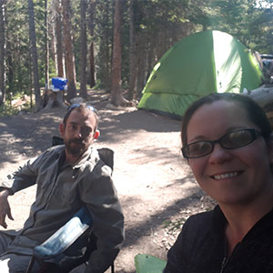
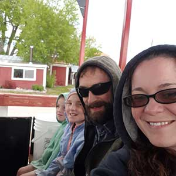
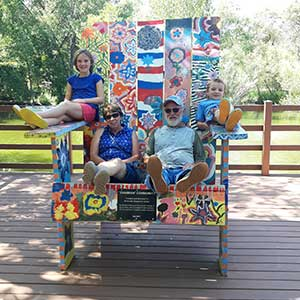

Early Life and Education
I was born in Providence, Rhode Island on August 2, 1983. After a couple of years there, our family moved to Connecticut, and then down to Florida when I was 7. There, I built my life after graduating from high school a year early. In my mid-20’s, I hopped on a plane and moved to Colorado to be closer to the mountains. I started this degree back in 2000, and after many trials and challenges, I’m just shy of a year away from finally finishing.
Family Gallery
I live in Fort Collins, Colorado, with my loving husband and his two beautiful children, whom I help to educate and raise. Izzy turned 13 this year, and Eli 10. They are wild little Colorado children, but they’re also full of that laid-back, let’s-all-just-chill attitude. Like us, they favor the outdoors and books. Jeremy and I love our outdoor getaways and part-time quiet evenings at home with our pets. We have a 3-year-old black lab named Gula, a 5-year-old German Shephard mix named Wiley, and a black cat named Karma. I have an older sister, a niece and nephew in Florida. We're really close with my husband's parents in Nebraska, the Martins. Here's a gallary of my world in color.

Work History
I’ve had an interesting and diverse work history. My resume only includes up to the last decade or so, but I’ve been working since age 14. I’ve done retail, sales, telemarketing, customer service, tech support, hosting, bartending, serving, prep cooking, medical transcription, content writing, digital marketing, web design, and now going into web development and data analytics. I may have missed a few, but the point is, I’ve learned a lot. I tried to incorporate what I learned from those positions into my resume. Here’s what that looks like.
Resume Download
My Professional Background
I've been a content writer and marketer since 2008, and a "serious" WordPress web designer since around 2016. I enjoy playing in HTML and CSS.
Professional Goals
Top three professional goals based on my current educational path include the following:
- Continue to be self-employed, with better hours and pay.
- Build authority in my industry and niche to drive more business.
- Become a reliable data and business analyst on which clients can easily rely.
Professional Skills and Proficiency Scores
Here is a list of my top four skills, along with an estimated proficiency based on experience and testing.
| Skill |
Proficiency |
| Content Creation (Write, Design, Optimize) |
95% |
| WordPress Development |
75% |
| Project Management |
75% |
| Data Analysis |
65% |